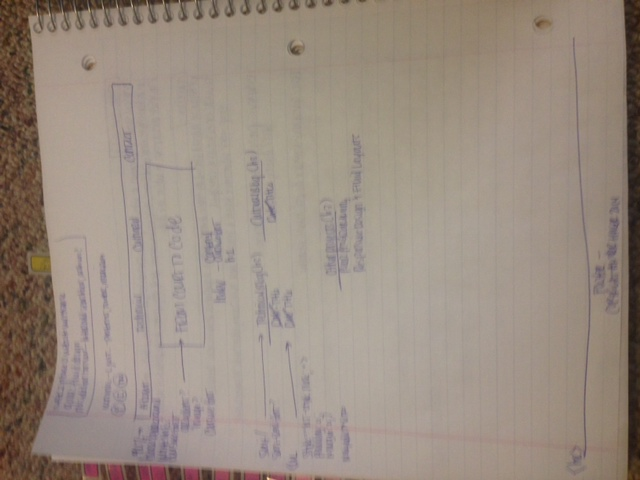

Plan: This site is an index of my other DBC projects, so the most important function is going to be presenting functioning links in a clear and ordered way. My audience is other boots, anyone who happens upon my GitHub, and perhaps prospective employers.  I want my web page to reflect the fashion/style blogs that I frequent - simple appearance, not too cluttered, white backgrounds, "hipster" fonts, easy navigation - search, top navigation bar, connected links, links that open to another browser window and not in the same window.  I don't often use the side navigation bars on the sites I visit, especially where there is a top nav bar so I may omit that for now on my site. 

	Name: From Court to Code 

   